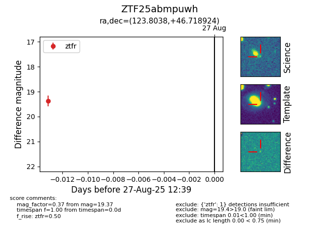

Target ZTF25abmpuwh at 2025-08-27 12:39, see:
FINK: fink-portal.org/ZTF25abmpuwh
Lasair: lasair-ztf.lsst.ac.uk/objects/ZTF25abmpuwh
ALeRCE: alerce.online/object/ZTF25abmpuwh
alt names
ZTF25abmpuwh (ztf,fink)
coordinates:
equatorial (ra, dec) = (123.8038,+46.71892)
galactic (l, b) = (172.9895,+33.37131)
photometry
last ztfr=19.37
1 ztfr detections
